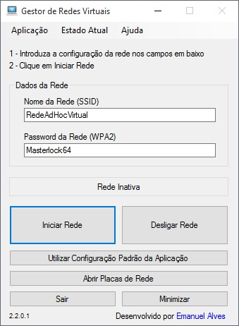

Bem vindo.
O Gestor de Redes Virtuais é uma aplicação desenvolvida em VB por Emanuel Alves, que permite de forma simples e intuitiva transformar praticamente qualquer computador portátil num hotspot ("router wifi") e partilhar a ligação à internet.

O Gestor de Redes Virtuais
Apetrechado de diversas funcionalidades, várias opções/definições, um sistema de auto-update integrado e totalmente gratuito, o "GRV" é uma das melhores aplicações para este fim actualmente disponíveis na internet - tudo sem "funcionalidades premium", trials, ou limitações.
Primeiros Passos
Após iniciar a rede virtual pela primeira vez, será necessário configurar as placas de rede para "partilharem" a ligação à internet. Clique AQUI para abrir o guia de configuração passo-a-passo.
Suporte para quem precisa
Qualquer utilizador que esteja com dificuldades em utilizar a aplicação ou configurar o seu sistema para permitir a partilha do acesso à internet, poderá entrar em contacto comigo pelo Github - @emannxx - ou por email: emanuel-alves@outlook.com.